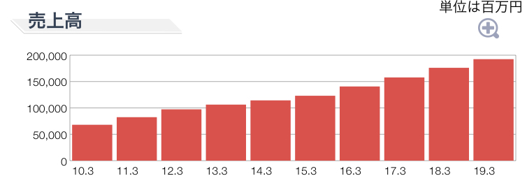
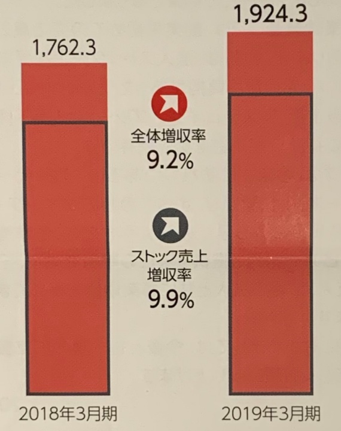

<!DOCTYPE html>
<html>
<head><meta name="generator" content="Hexo 3.9.0">
  <meta charset="utf-8">
  
<!-- Google Analytics -->
<script type="text/javascript">
(function(i,s,o,g,r,a,m){i['GoogleAnalyticsObject']=r;i[r]=i[r]||function(){
(i[r].q=i[r].q||[]).push(arguments)},i[r].l=1*new Date();a=s.createElement(o),
m=s.getElementsByTagName(o)[0];a.async=1;a.src=g;m.parentNode.insertBefore(a,m)
})(window,document,'script','//www.google-analytics.com/analytics.js','ga');

ga('create', 'UA-2714410-4', 'auto');
ga('require', 'linkid', 'linkid.js');
ga('send', 'pageview');

</script>
<!-- End Google Analytics -->


  
  <title>IIJ(インターネットイニシアティブ)の株式を追加購入。将来の成長に期待大。 | 共働き夫婦の楽らくライフ</title>
  <meta name="viewport" content="width=device-width, initial-scale=1, maximum-scale=1">
  
    <meta name="description" content="IIJ（インターネットイニシタティブ）は2019/7/18に日本初のeSIMサービスを開始しましたね。私はこのニュースをみてIIJ株を100株から300株に買い増しました。    私は一部上場企業のITベンダーに10年以上勤めておりIT業界のトレンドは常に情報収集しています。こんな私が、IIJが「これから流行るであろう技術トレンドを押さえまくっている」と断言します。">
<meta name="keywords" content="投資,株式,IIJ">
<meta property="og:type" content="article">
<meta property="og:title" content="IIJ(インターネットイニシアティブ)の株式を追加購入。将来の成長に期待大。">
<meta property="og:url" content="https://tomoraku-life.com/invest-iij/index.html">
<meta property="og:site_name" content="共働き夫婦の楽らくライフ">
<meta property="og:description" content="IIJ（インターネットイニシタティブ）は2019/7/18に日本初のeSIMサービスを開始しましたね。私はこのニュースをみてIIJ株を100株から300株に買い増しました。    私は一部上場企業のITベンダーに10年以上勤めておりIT業界のトレンドは常に情報収集しています。こんな私が、IIJが「これから流行るであろう技術トレンドを押さえまくっている」と断言します。">
<meta property="og:locale" content="ja">
<meta property="og:image" content="https://tomoraku-life.com/invest-iij/1.jpg">
<meta property="og:image" content="https://tomoraku-life.com/invest-iij/2.jpg">
<meta property="og:image" content="https://tomoraku-life.com/images/avatar.png">
<meta property="og:updated_time" content="2019-07-18T15:00:00.000Z">
<meta name="twitter:card" content="summary">
<meta name="twitter:title" content="IIJ(インターネットイニシアティブ)の株式を追加購入。将来の成長に期待大。">
<meta name="twitter:description" content="IIJ（インターネットイニシタティブ）は2019/7/18に日本初のeSIMサービスを開始しましたね。私はこのニュースをみてIIJ株を100株から300株に買い増しました。    私は一部上場企業のITベンダーに10年以上勤めておりIT業界のトレンドは常に情報収集しています。こんな私が、IIJが「これから流行るであろう技術トレンドを押さえまくっている」と断言します。">
<meta name="twitter:image" content="https://tomoraku-life.com/invest-iij/1.jpg">
<meta name="twitter:creator" content="@tomoraku_life">
  
  
    <link rel="alternate" href="/atom.xml" title="共働き夫婦の楽らくライフ" type="application/atom+xml">
  
  
    <link rel="icon" href="/images/favicon.ico">
  
  
    <link href="//fonts.googleapis.com/css?family=Source+Code+Pro" rel="stylesheet" type="text/css">
  
  <link rel="stylesheet" href="/css/style.css">
  <link href="https://fonts.googleapis.com/css?family=Concert+One" rel="stylesheet">
  <link rel="stylesheet" href="https://use.fontawesome.com/releases/v5.7.0/css/all.css">
  <script src="https://ajax.googleapis.com/ajax/libs/jquery/3.3.1/jquery.min.js"></script>
  <script src="/js/custom.js"></script>

  <script async src="//pagead2.googlesyndication.com/pagead/js/adsbygoogle.js"></script>
  <script>
     (adsbygoogle = window.adsbygoogle || []).push({
          google_ad_client: "ca-pub-7705145221063766",
          enable_page_level_ads: true
     });
  </script>
</head>
</html>
<body>
  <div id="container">
    <div id="wrap">
      <header id="header">
  <div id="banner"></div>
  <div id="header-outer" class="outer">
    <div id="header-title" class="inner">
      <h1 id="logo-wrap">
        <!--<a href="/" id="logo">共働き夫婦の楽らくライフ</a>-->
        <a href="/" id="logo"></a>
      </h1>
      
        <h2 id="subtitle-wrap">
          <a href="/" id="subtitle">現代を生きる多忙な共働き世帯が、いかに楽して楽しく生活できるかを考えるブログです</a>
        </h2>
      
    </div>
    <div id="header-inner" class="inner">
      <nav id="main-nav">
        
          <a class="main-nav-link" href="/categories/育休パパの経験談/">育休パパの経験談</a>
        
          <a class="main-nav-link" href="/categories/株主優待生活/">株主優待生活</a>
        
          <a class="main-nav-link" href="/categories/資産運用/">資産運用</a>
        
          <a class="main-nav-link" href="/categories/マイホーム/">マイホーム</a>
        
          <a class="main-nav-link" href="/about-this-page">プロフィール</a>
        
      </nav>
      <nav id="sub-nav">
        
          <a id="nav-rss-link" class="nav-icon" href="/atom.xml" title="RSSフィード"></a>
        
        <a id="nav-search-btn" class="nav-icon" title="検索"></a>
      </nav>
      <div id="search-form-wrap">
        <form action="//google.com/search" method="get" accept-charset="UTF-8" class="search-form"><input type="search" name="q" class="search-form-input" placeholder="Search"><button type="submit" class="search-form-submit">&#xF002;</button><input type="hidden" name="sitesearch" value="https://tomoraku-life.com"></form>
      </div>
    </div>
  </div>
</header>
      <div class="outer">
        <section id="main"><article id="post-invest-iij" class="article article-type-post" itemscope itemprop="blogPost">

  <div class="article-inner">
    
    
      <header class="article-header">
        
  

    <ul class="breadcrumb">
        <li itemscope="itemscope" itemtype="http://data-vocabulary.org/Breadcrumb">
        <a href="/" itemprop="url">
         <span itemprop="title">ホーム</span>
        </a>
        </li>
        <li itemscope="itemscope" itemtype="http://data-vocabulary.org/Breadcrumb">
        <a href="/categories/資産運用" itemprop="url">
         <span itemprop="title">資産運用</span>
        </a>
        </li>
        <li itemscope="itemscope" itemtype="http://data-vocabulary.org/Breadcrumb">
        <a href="" itemprop="url">
         <span itemprop="title"></span>
        </a>
        </li>
    </ul>

    <h1 class="article-title" itemprop="name">
      IIJ(インターネットイニシアティブ)の株式を追加購入。将来の成長に期待大。
    </h1>

    <div class="article-date">
        <time datetime="2019-07-18T15:00:00.000Z" itemprop="datePublished" class="published">2019.07.19</time>
        
          <time datetime="2019-07-18T15:00:00.000Z" itemprop="dateModified" class="modified">2019.07.19</time>
        
    </div>
    
    

      </header>
    

    
      <div class="sns_buttons">
    
<ul class="shareList">
  <li class="shareList__item"><a class="shareList__link icon-twitter" href="https://twitter.com/intent/tweet?text=IIJ(インターネットイニシアティブ)の株式を追加購入。将来の成長に期待大。 https://tomoraku-life.com/invest-iij/index.html" onClick="window.open(encodeURI(decodeURI(this.href)),'twwindow','width=550, height=450, personalbar=0, toolbar=0, scrollbars=1'); return false;" target="_blank" title="Twitter"></a></li>
  <li class="shareList__item"><a class="shareList__link icon-facebook" href="http://www.facebook.com/share.php?u=https://tomoraku-life.com/invest-iij/index.html" onClick="window.open(encodeURI(decodeURI(this.href)),'fbwindow','width=550, height=450, personalbar=0, toolbar=0, scrollbars=1'); return false;" target="_blank" title="Facebook"></a></li>
  <li class="shareList__item"><a class="shareList__link icon-hatebu" href="http://b.hatena.ne.jp/add?mode=confirm&url=https://tomoraku-life.com/invest-iij/index.html&title=IIJ(インターネットイニシアティブ)の株式を追加購入。将来の成長に期待大。" target="_blank" title="はてなブックマーク"></a></li>
  <li class="shareList__item"><a class="shareList__link icon-line" href="http://line.me/R/msg/text?IIJ(インターネットイニシアティブ)の株式を追加購入。将来の成長に期待大。 https://tomoraku-life.com/invest-iij/index.html" target="_blank" title="LINE"></a></li>
</ul>
</div>

    

    <div class="article-entry" itemprop="articleBody">
      
        <p>IIJ（インターネットイニシタティブ）は2019/7/18に日本初のeSIMサービスを開始しましたね。私はこのニュースをみてIIJ株を100株から300株に買い増しました。</p>
<!-- 国内でiPhoneのeSIMが活用できる「IIJmio eSIMプラン（ベータ版）」 -->
<iframe class="hatenablogcard" style="width: 100%; height: 155px; max-width: 680px;" src="https://hatenablog-parts.com/embed?url=https://k-tai.watch.impress.co.jp/docs/column/minna/1195927.html" width="300" height="150" frameborder="0" scrolling="no"></iframe>

<p>私は一部上場企業のITベンダーに10年以上勤めておりIT業界のトレンドは常に情報収集しています。こんな私が、IIJが「<strong>これから流行るであろう技術トレンドを押さえまくっている</strong>」と断言します。</p>
<a id="more"></a>

<div class="toc">

<!-- toc -->

<ul>
<li><a href="#somosomoiijtutedonnahui-she">そもそもIIJってどんな会社？</a></li>
<li><a href="#iijhaji-shu-torendowoya-saemakututeiru">IIJは技術トレンドを押さえまくっている</a><ul>
<li><a href="#kuraudoji-pan">クラウド基盤</a></li>
<li><a href="#iot">IoT</a></li>
<li><a href="#sekiyuritei">セキュリティ</a></li>
<li><a href="#jia-xiang-tong-huo-huintetuku">仮想通貨・フィンテック</a></li>
<li><a href="#hurumvnoesim">フルMVNO・eSIM</a></li>
</ul>
</li>
<li><a href="#iijnoqiang-mihawakatutakedo-ye-ji-hadounano">IIJの強みはわかったけど、業績はどうなの？</a><ul>
<li><a href="#ye-ji-yapei-dang-ha">業績や配当は？</a></li>
<li><a href="#qiang-mihawakatutakedo-ruo-dian-ha">強みはわかったけど、弱点は？</a></li>
</ul>
</li>
<li><a href="#matome">まとめ</a></li>
</ul>
<!-- tocstop -->

</div>

<h2><span id="somosomoiijtutedonnahui-she">そもそもIIJってどんな会社？</span><a href="#somosomoiijtutedonnahui-she" class="header-anchor">#</a></h2><p>IIJはいわゆるIT企業ですが、そのなかでもネットワーク接続サービス、および、システム構築を行なっている会社です。</p>
<blockquote>
<p>事業内容：インターネット接続サービス、WANサービスおよびネットワーク関連サービスの提供、ネットワーク・システムの構築・運用保守、通信機器の開発及び販売<br><cite><a href="https://www.iij.ad.jp/company/about/outline/" target="_blank" rel="noopener">会社概要 | IIJ</a></cite></p>
</blockquote>
<p>個人向けの商品としては<strong>格安SIMのIIJmio</strong>がもっとも認知されていると思います。しかし、IIJは法人向け事業のウェートの方が大きい会社です。</p>
<h2><span id="iijhaji-shu-torendowoya-saemakututeiru">IIJは技術トレンドを押さえまくっている</span><a href="#iijhaji-shu-torendowoya-saemakututeiru" class="header-anchor">#</a></h2><p>具体的に私がIIJが時代を先取りしていると考えているポイントは以下の5つです。</p>
<ul>
<li>クラウド基盤</li>
<li>IoT</li>
<li>セキュリティ</li>
<li>仮想通貨・フィンテック</li>
<li>フルMVNO・eSIM</li>
</ul>
<p>それぞれ手短に説明していきましょう。</p>
<h3><span id="kuraudoji-pan">クラウド基盤</span><a href="#kuraudoji-pan" class="header-anchor">#</a></h3><p>現在、海外で爆発的に利用が広がっているコンテナ（もしくはKubernetes）という新しいサーバ技術があります。</p>
<p>日本ではまだゲーム業界くらいにしか普及していませんが、コンテナ技術はビジネスにおける費用対効果や俊敏性へのメリットが大きいため、日本でも今後普及するのは間違いがないです。そんな<strong>コンテナ技術を詰め込んだデータセンターをIIJは虎視眈々と準備しています</strong>。</p>
<!-- IIJのコンテナ型データセンター -->
<iframe class="hatenablogcard" style="width: 100%; height: 155px; max-width: 680px;" src="https://hatenablog-parts.com/embed?url=https://www.iij.ad.jp/DC/index.html" width="300" height="150" frameborder="0" scrolling="no"></iframe>

<p>さらに、業界には「AmazonのAWS」「GoogleのGCP」「MicrosoftのAzure」といった3大クラウドも存在します。こちらについても手を抜くことなく正式なパートナーとなる動きを見せています。</p>
<!-- IIJ、マネージドサービス事業者向けの「Microsoft Azure Networking MSP」認定を取得 -->
<iframe class="hatenablogcard" style="width: 100%; height: 155px; max-width: 680px;" src="https://hatenablog-parts.com/embed?url=https://cloud.watch.impress.co.jp/docs/news/1196256.html" width="300" height="150" frameborder="0" scrolling="no"></iframe>

<p>日本政府は2018年6月にクラウド利用基本方針「クラウド・バイ・デフォルト原則」というのを発表しました。公共事業を皮切りに<strong>これまでクラウド利用をしていなかった分野におけるクラウド利用が広がり、今後、需要は間違いなく広がります</strong>。</p>
<p>さらに、日本企業の場合、Amazonなどの海外ベンダーのクラウドを利用するのを嫌うこともあります。IIJはこれに先回りして手を打ってると言えます。クラウドサービスの利用動向が国内・海外どちらに転がったとしてもIIJは万全でしょう。</p>
<h3><span id="iot">IoT</span><a href="#iot" class="header-anchor">#</a></h3><p>モノとインターネットを繋げるIoTという潮流があります。ここで、IoTは技術的にまだ黎明期であり、IoTのシステム構築には必ず専門知識が必要となります。</p>
<p><strong>IIJはIoT機器向けのネットワーク接続サービスとシステム構築を同時に行える日本唯一の企業</strong>といっても過言ではありません。さらに個人向けにもIoTサービスを提供しています。個人の前衛的な技術者が利用することでさらにIIJのIoTサービスに磨きがかかると思います。</p>
<!-- IIJmio IoTサービス -->
<iframe class="hatenablogcard" style="width: 100%; height: 155px; max-width: 680px;" src="https://hatenablog-parts.com/embed?url=https://www.iijmio.jp/mit/" width="300" height="150" frameborder="0" scrolling="no"></iframe>

<h3><span id="sekiyuritei">セキュリティ</span><a href="#sekiyuritei" class="header-anchor">#</a></h3><p>セキュリティは奥が深く一朝一夕でできる分野ではありません。そこでIIJのような専門知識を有する業者が提供するセキュリティサービスを利用するのが合理的です。</p>
<p>先日もセブンPayでのセキュリティ事故などがありましたね。<strong>物事のデジタル化が進むのに伴いセキュリティに関する需要は確実に増えています</strong>。</p>
<p>これに対し、IIJはこれから到来するクラウド型システム向けのセキュリティサービスのラインナップをどんどん増やしています。</p>
<!-- IIJ統合セキュリティ運用ソリューション -->
<iframe class="hatenablogcard" style="width: 100%; height: 155px; max-width: 680px;" src="https://hatenablog-parts.com/embed?url=https://www.iij.ad.jp/biz/sec-ope/" width="300" height="150" frameborder="0" scrolling="no"></iframe>

<h3><span id="jia-xiang-tong-huo-huintetuku">仮想通貨・フィンテック</span><a href="#jia-xiang-tong-huo-huintetuku" class="header-anchor">#</a></h3><p>ブロックチェーンという革命的な技術により、「デジタル資産」という形式の資産が今後増えていくのは間違いないです。ビットコインや最近話題のLibra（リブラ）はまだまだ序章です。</p>
<p>「デジタル資産」の種類がもっと増えた世の中を想像してみてください。すると、<strong>人々はお金を銀行に預けているように「デジタル資産」を安全に保管したい</strong>という需要が自然と発生するのが容易に想像できます。</p>
<p>そんな中でIIJはすでに動いており、IIJ傘下ディーカレットが2019年4月に<strong>デジタル通貨のメインバンク DeCurret</strong>のサービスを開始しました。IIJ、先見の明がありすぎです。</p>
<!-- デジタル通貨のメインバンク DeCurret -->
<iframe class="hatenablogcard" style="width: 100%; height: 155px; max-width: 680px;" src="https://hatenablog-parts.com/embed?url=https://www.decurret.com/" width="300" height="150" frameborder="0" scrolling="no"></iframe>

<h3><span id="hurumvnoesim">フルMVNO・eSIM</span><a href="#hurumvnoesim" class="header-anchor">#</a></h3><p>最後に、極め付けはこれ。この記事の冒頭でも2019年7月に開始したeSIMサービスです。</p>
<p>eSIMを簡単に説明すると、これまではスマホのネット回線契約にSIMカードのような物理的なメディアが必要でしたが、これが不要になります。発行されたQRコードを読み取るだけでeSIMに接続のための情報が書き込まれて、すぐにその場で回線を利用することが可能になります。<strong>従来よりも圧倒的に便利なのでこれから絶対に流行ります</strong>。</p>
<p>実はこれ、<strong>日本ではIIJしか提供できないサービス</strong>といえます。</p>
<p>まず、eSIMを発行するにはフルMVNOである必要があります。mineoをはじめ他の格安SIMを提供している多くの会社がありますが、各種格安SIMの会社のうち<strong>フルMVNOであるのはIIJだけです</strong>。</p>
<p>では、ドコモやauやソフトバンクはeSIMを発行しないのか？これは<strong>すぐにはしないのではと考えられます</strong>。理由はeSIMの発行は店舗を必要としないので、店舗をもつ会社はこれと競合してしまい売り上げが減ってしまうからです。これは都合が悪いため、3大キャリアはある程度eSIMが市場に認知されてからしか手を打ってこないと考えられます。</p>
<!-- 国内でiPhoneのeSIMが活用できる「IIJmio eSIMプラン（ベータ版）」 -->
<iframe class="hatenablogcard" style="width: 100%; height: 155px; max-width: 680px;" src="https://hatenablog-parts.com/embed?url=https://k-tai.watch.impress.co.jp/docs/column/minna/1195927.html" width="300" height="150" frameborder="0" scrolling="no"></iframe>

<h2><span id="iijnoqiang-mihawakatutakedo-ye-ji-hadounano">IIJの強みはわかったけど、業績はどうなの？</span><a href="#iijnoqiang-mihawakatutakedo-ye-ji-hadounano" class="header-anchor">#</a></h2><h3><span id="ye-ji-yapei-dang-ha">業績や配当は？</span><a href="#ye-ji-yapei-dang-ha" class="header-anchor">#</a></h3><p>少なくとも最近の10年間は<strong>着実に売上高を伸ばしています</strong>。これに対して配当は、ここ3年間は据え置きとなっています。また、利回り1.32%とそこまで高くはありません。</p>
<p><span class="image-caption">Yahoo!ファイナンスより(2019/7/19時点)</span></p>
<p>これはIIJが虎視眈々と準備のための投資をしているためと私は考えています。</p>
<p>IIJは「ストック収益モデル」を重視しており、これの割合が非常に大きく、かつ年々成長しています。また、利益をキチンと自社に蓄えており、自己資本比率が45.2%であること（2019/7/19時点）からかなり安定した経営をしています。</p>
<p><span class="image-caption">IIJの株主通信(2019年3月期)より</span></p>
<p>IIJはこの「ストック収益モデル」の経営を軸としてさらに拡大するために、この記事の前半で述べたような強みを強化している最中です。</p>
<h3><span id="qiang-mihawakatutakedo-ruo-dian-ha">強みはわかったけど、弱点は？</span><a href="#qiang-mihawakatutakedo-ruo-dian-ha" class="header-anchor">#</a></h3><p>ここまで、IIJはかなり安定した経営をしていることと、IT業界の将来を見据えた投資をしていることを説明しました。</p>
<p>弱点らしい弱点は見当たらないですが、強いていてば、<strong>IIJが今投資していることがいつ花開くかがわからないこと</strong>が挙げられるのではないかと思います。</p>
<p>ブロックチェーンやコンテナなどの先端技術を使用したシステム構築や、IoTの市場が今後伸びるのは確実ですが、日本において「いつ、どれくらいか」と言われると少々不透明なところがあります。</p>
<p>そのため、IIJの株式を購入してもこれらの市場が大きくなるまで気長に待つことが求められます。</p>
<h2><span id="matome">まとめ</span><a href="#matome" class="header-anchor">#</a></h2><p>IIJは自らの強みを理解して戦略に落とし込んでおり、本当に賢いと思います。また経営の安定性も抜群ですので安心して株式を購入できます。</p>
<p>また、私もITエンジニアとしてIIJが取り組んでいる技術やサービスが大好きです。今後の成長を期待して、株をガチホして待ってます！</p>
<div class="talk"><div class="faceicon"><div class="name">コマ</div></div><div class="chatting"><div class="says">
<p>もちろん、私のiPhoneの回線はIIJmioを使ってます。eSIMも近々試してみたい！</p>
</div></div></div>


      
    </div>

    
      <div class="sns_buttons">
    
      この記事が気に入ったら友達にシェアしよう
    
<ul class="shareList">
  <li class="shareList__item"><a class="shareList__link icon-twitter" href="https://twitter.com/intent/tweet?text=IIJ(インターネットイニシアティブ)の株式を追加購入。将来の成長に期待大。 https://tomoraku-life.com/invest-iij/index.html" onClick="window.open(encodeURI(decodeURI(this.href)),'twwindow','width=550, height=450, personalbar=0, toolbar=0, scrollbars=1'); return false;" target="_blank" title="Twitter"></a></li>
  <li class="shareList__item"><a class="shareList__link icon-facebook" href="http://www.facebook.com/share.php?u=https://tomoraku-life.com/invest-iij/index.html" onClick="window.open(encodeURI(decodeURI(this.href)),'fbwindow','width=550, height=450, personalbar=0, toolbar=0, scrollbars=1'); return false;" target="_blank" title="Facebook"></a></li>
  <li class="shareList__item"><a class="shareList__link icon-hatebu" href="http://b.hatena.ne.jp/add?mode=confirm&url=https://tomoraku-life.com/invest-iij/index.html&title=IIJ(インターネットイニシアティブ)の株式を追加購入。将来の成長に期待大。" target="_blank" title="はてなブックマーク"></a></li>
  <li class="shareList__item"><a class="shareList__link icon-line" href="http://line.me/R/msg/text?IIJ(インターネットイニシアティブ)の株式を追加購入。将来の成長に期待大。 https://tomoraku-life.com/invest-iij/index.html" target="_blank" title="LINE"></a></li>
</ul>
</div>

    

    <div class="article-entry">
      <!-- Google Adsense -->
      <script async src="https://pagead2.googlesyndication.com/pagead/js/adsbygoogle.js"></script>
      <!-- ディスプレイ(記事の終わり) -->
      <ins class="adsbygoogle"
          style="display:block"
          data-ad-client="ca-pub-7705145221063766"
          data-ad-slot="8691379280"
          data-ad-format="auto"
          data-full-width-responsive="true"></ins>
      <script>
          (adsbygoogle = window.adsbygoogle || []).push({});
      </script>
      <!-- Google Adsense -->
    </div>

    <div class="article-entry">
      <h3>関連する記事</h3>
      <!-- Google Adsense -->
      <script async src="https://pagead2.googlesyndication.com/pagead/js/adsbygoogle.js"></script>
      <ins class="adsbygoogle"
          style="display:block"
          data-ad-format="autorelaxed"
          data-ad-client="ca-pub-7705145221063766"
          data-ad-slot="6224465210"></ins>
      <script>
          (adsbygoogle = window.adsbygoogle || []).push({});
      </script>
      <!-- Google Adsense -->
    </div>

    <footer class="article-footer">
      
    </footer>

  </div>
</article>

</section>
        
          <aside id="sidebar">
  
    <div class="widget-wrap">
  <h3 class="widget-title">自己紹介</h3>
  <div class="widget">
    <div class="profile">
      
      <p>コマ</p>
    </div>
    <p>
      妻と子供２人とマイホームで暮らし、日々「いかに楽して」「いかに楽しく」生活できるかを考えています。
      子供が産まれたタイミングで育休を取得したことで人生が豊かになりました。
    </p>
    <div style="text-align: center;">
      <a href="https://twitter.com/tomoraku_life?ref_src=twsrc%5Etfw" class="twitter-follow-button"
        data-show-count="false">Follow @tomoraku_life</a>
      <script async src="https://platform.twitter.com/widgets.js" charset="utf-8"></script>
    </div>
    <p>
      お問い合わせ・ご連絡はTwitterのDMにてお受けします。
    </p>
  </div>
</div>
  
    <div class="widget-wrap">
  <h3 class="widget-title">当ブログのアピール</h3>
  <div class="widget">
    <p>
      <strong>
        <ol>
          <li>累計80万PV達成！</li>
          <li>Googleアドセンス収益、累計30万円達成！</li>
        </ol>
      </strong>
    </p>
    <p>
      読者のみなさまのおかげです。これからもお役に立てる記事を書いていきますので、どうぞよろしくお願いします！
    </p>
  </div>
</div>
  
    
  <div class="widget-wrap">
    <h3 class="widget-title">カテゴリ</h3>
    <div class="widget">
      <ul class="category-list"><li class="category-list-item"><a class="category-list-link" href="/categories/Apple製品/">Apple製品</a><span class="category-list-count">12</span></li><li class="category-list-item"><a class="category-list-link" href="/categories/ふるさと納税/">ふるさと納税</a><span class="category-list-count">5</span></li><li class="category-list-item"><a class="category-list-link" href="/categories/ブログ運営/">ブログ運営</a><span class="category-list-count">2</span></li><li class="category-list-item"><a class="category-list-link" href="/categories/プログラミング/">プログラミング</a><span class="category-list-count">3</span></li><li class="category-list-item"><a class="category-list-link" href="/categories/マイホーム/">マイホーム</a><span class="category-list-count">13</span></li><li class="category-list-item"><a class="category-list-link" href="/categories/妊活／不妊治療/">妊活／不妊治療</a><span class="category-list-count">4</span></li><li class="category-list-item"><a class="category-list-link" href="/categories/子育て/">子育て</a><span class="category-list-count">5</span></li><li class="category-list-item"><a class="category-list-link" href="/categories/日記/">日記</a><span class="category-list-count">17</span></li><li class="category-list-item"><a class="category-list-link" href="/categories/株主優待生活/">株主優待生活</a><span class="category-list-count">8</span></li><li class="category-list-item"><a class="category-list-link" href="/categories/生活の知恵/">生活の知恵</a><span class="category-list-count">33</span></li><li class="category-list-item"><a class="category-list-link" href="/categories/育休パパの経験談/">育休パパの経験談</a><span class="category-list-count">12</span></li><li class="category-list-item"><a class="category-list-link" href="/categories/読書/">読書</a><span class="category-list-count">1</span></li><li class="category-list-item"><a class="category-list-link" href="/categories/資産運用/">資産運用</a><span class="category-list-count">8</span></li><li class="category-list-item"><a class="category-list-link" href="/categories/音楽/">音楽</a><span class="category-list-count">5</span></li></ul>
    </div>
  </div>


  
</aside>
        
      </div>
      <footer id="footer">
  
  <div class="outer">
    <div id="footer-info" class="inner">
      &copy; 2019 共働き夫婦の楽らくライフ
    </div>
  </div>
</footer>

      <div id="menu">
        <div class="menu-title">
          <a href="/"></a>
        </div>
        <a id="main-nav-toggle" class="nav-icon"></a>
      </div>
      <div id="page_top"><a href="#"></a></div>
    </div>
    <nav id="mobile-nav">
  
    <a href="/categories/育休パパの経験談/" class="mobile-nav-link">育休パパの経験談</a>
  
    <a href="/categories/株主優待生活/" class="mobile-nav-link">株主優待生活</a>
  
    <a href="/categories/資産運用/" class="mobile-nav-link">資産運用</a>
  
    <a href="/categories/マイホーム/" class="mobile-nav-link">マイホーム</a>
  
    <a href="/about-this-page" class="mobile-nav-link">プロフィール</a>
  
</nav>
    

<script src="//ajax.googleapis.com/ajax/libs/jquery/2.0.3/jquery.min.js"></script>


<script src="/js/script.js"></script>


  </div>
</body>
</html>